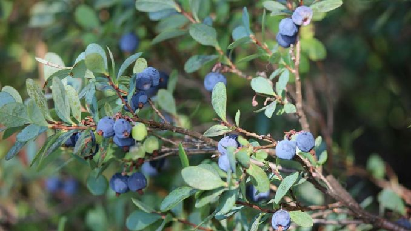
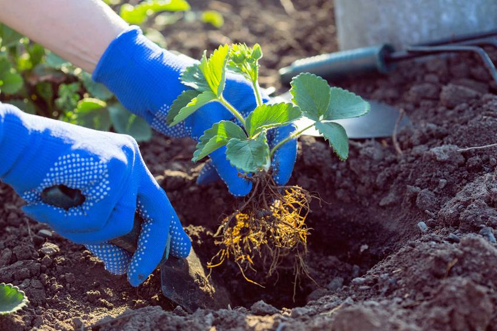

Na co zwrócić uwagę sadząc borówkę?
Borówka wysoka, powszechnie nazywana borówką amerykańską, staje się coraz popularniejszym krzewem uprawnym w Polsce. Powodów tego jest kilka – przede wszystkim owoce borówki amerykańskiej są smaczne i bogate w substancje odżywcze. Dodatkowo są odporne na choroby i szkodniki, nie ma więc przy nich dużo pracy.
Jabłoń 'Gala' - co powinniśmy wiedzieć o uprawie
Decydując się na uprawę jabłoni 'Gala',
Kiedy sadzić truskawki – najlepszy termin
Truskawki zazwyczaj utrzymują się na tym samym miejscu przez 3-4 lata. To optymalny czas do ich uprawy, inaczej mogą zacząć chorować i wydają o wiele mniej owoców. Teoretycznie można je sadzić przez cały rok, od wiosny do jesieni. Praktycznie jednak termin jest zależny od kilku czynników, najważniejszy jest jednak związany z rodzajem sadzonek.
